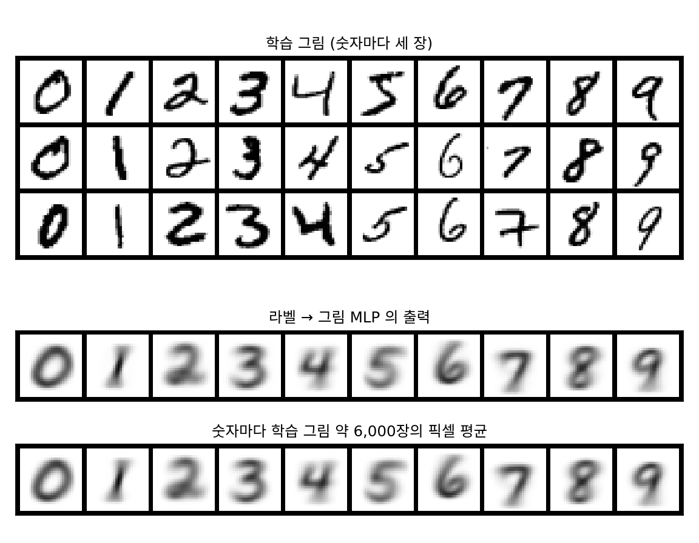

1장 — MLP로 만든 VAE: 첫 생성 모델
이 장의 물음
손글씨 숫자 그림을 받아 0부터 9까지 무슨 숫자인지 맞히는 신경망은 한 번쯤 만들어 봤을 것이다. 층 세 개짜리 작은 신경망도 처음 보는 그림 만 장 가운데 97% 넘게 맞힌다. 학습이 잘되는 까닭은 그림마다 정답 라벨이 하나씩 붙어 있어서, 신경망의 답이 정답에서 얼마나 벗어났는지를 숫자 하나로 잴 수 있기 때문이다.
이제 방향을 바꿔 「3을 하나 그려 봐」라고 하면 어떻게 될까? 세상에 있는 3의 모양은 셀 수 없이 많고, 그 가운데 어느 것도 「바로 이것」이라는 정답이 아니다. 맞출 정답이 없는데 무엇을 맞히도록 가르쳐야 할까? 이 장은 다음 물음을 차례로 따라간다.
- 정답이 하나가 아닌 문제를, 정답을 맞히는 데 익숙한 신경망에게 그대로 맡기면 무엇이 나올까?
- 그림 자신을 정답으로 삼으면 학습은 할 수 있다. 그렇게 배운 신경망에서 새 그림을 꺼낼 수 있을까?
- 새 그림을 꺼낼 수 있으려면 학습 과정에서 무엇을 정해 두어야 할까?
- 그 학습이 실제로 올리는 값은 무엇이고, 그 값은 우리가 바라던 값과 얼마나 떨어져 있을까?
MLP: 정답이 하나일 때 잘 맞히는 함수
손글씨 숫자 분류기를 다시 떠올려 보자. 쓰는 데이터는 MNIST(손글씨 숫자 데이터셋. 학습용 60,000장, 시험용 10,000장)다. 그림 한 장은 가로세로 28픽셀 회색조라 28 × 28 = 784개의 밝기(0은 바탕, 1은 잉크)로 적히고, 신경망에게는 784개의 숫자가 늘어선 벡터 하나다.
되짚기: 층을 쌓은 함수
이 책에서 처음 쓰는 신경망은 가장 단순한 꼴이다. 벡터를 받아 가중치 행렬을 곱하고 치우침을 더한 뒤, 음수를 0으로 자르는 함수(ReLU)를 씌운다. 이것을 층이라 부르고, 층을 몇 개 이어 붙인다.
이렇게 층을 여러 겹 쌓은 함수가 MLP(다층 퍼셉트론, multilayer perceptron)다. 로짓 10개에 소프트맥스를 씌우면 합이 1인 확률 10개가 되고, 정답 숫자의 확률에 로그를 씌워 마이너스를 붙인 값(교차 엔트로피)을 손실 𝓛로 삼는다. 매개변수를 모두 모아 θ(세타)라 쓰고, 역전파로 손실의 기울기를 구해 θ를 조금씩 고친다. 784 → 256 → 256 → 10의 MLP는 매개변수가 784 × 256 + 256 + 256 × 256 + 256 + 256 × 10 + 10 = 269,322개이고, 학습 그림을 다섯 번 돌려 학습하면 시험 그림의 97.59%를 맞힌다(이 장의 숫자는 모두 sources/ch01/ 의 스크립트로 직접 돌린 값이다).
거꾸로 세운 MLP: 라벨을 넣고 그림을 받는다
같은 도구로 그림을 그려 보자. MLP를 거꾸로 세워 입력에 라벨을, 출력에 784칸짜리 그림을 둔다. 라벨은 열 칸 가운데 한 칸만 1인 벡터(원-핫 벡터)로 넣고, 출력은 칸마다 0과 1 사이의 밝기가 되도록 시그모이드를 씌운다. 정답은 그 라벨이 붙은 학습 그림이고, 손실은 출력과 정답 그림의 784칸 제곱 오차 합이다. 10 → 256 → 784의 MLP를 학습 그림 전체로 열 번 돌려 학습했다.
학습이 끝난 MLP에 「3」을 넣으면 그림 하나가 나온다. 그 그림을 학습 그림 가운데 3 6,131장과 견줘 보면, 가장 가까운 3과도 제곱 거리가 22.8이고 평균으로는 45.0이다. 그런데 3 6,131장을 픽셀마다 평균 낸 그림과의 제곱 거리는 0.09다. 「7」을 넣어도 같다. 가장 가까운 7과 17.5, 7들의 평균 그림과 0.05. MLP가 그린 것은 어느 학생의 3도 아닌, 3들의 평균이었다.

평균 그림은 흐릿하다. 밝기가 0.2와 0.8 사이인 회색 칸이 MLP 출력에서는 25.0%인데, 실제 시험 그림에서는 6.1%뿐이다. 사람마다 획이 지나가는 자리가 조금씩 달라서, 평균을 내면 획이 번져 회색 띠가 된다.
까닭은 손실의 모양에 있다. 같은 입력 y에 정답이 여럿 붙어 있으면, 제곱 오차의 평균을 가장 작게 만드는 출력은 그 정답들의 평균이다.
c에 대해 미분하면 −2(E[x ∣ y] − c)이고, 이것이 0이 되는 곳이 평균이다. 이 평균을 조건부 평균 (같은 입력에 붙은 정답들의 평균 / conditional mean)이라 한다. 분류에서는 그림 하나에 정답 라벨이 거의 하나라 이 성질이 드러나지 않았다. 입력 하나에 정답이 여럿인 문제에서는, 정답을 맞히도록 배운 신경망이 정답 어느 것도 아닌 평균을 내놓는다.
ML에서: 「그럴듯한 하나」와 「평균」은 다르다
그림을 만드는 모델에게 바라는 것은 실제로 있을 법한 3 하나, 다시 물으면 또 다른 3 하나다. 평균은 그 어느 쪽도 아니다. 신경망의 크기나 학습 시간의 문제가 아니라는 점이 중요하다. 이 MLP는 이미 평균 그림과 제곱 거리 0.09까지 다가갔다. 손실이 시킨 일을 거의 완벽하게 해낸 것이다. 그림을 만들려면 손실이 시키는 일 자체를 바꿔야 한다. 이 장의 나머지는 그 길을 찾는다.
문제 1. 택배는 언제 오나
우리 동네 택배는 날마다 오전 10시 아니면 오후 4시(16시)에 온다. 둘은 반반이다. 앱이 도착 시각을 숫자 하나로 예측하고, 예측과 실제 도착 시각의 차이를 제곱한 값의 평균으로 평가받는다. (가) 10시, 13시, 16시로 예측할 때 평가 점수(제곱 오차의 평균)는 각각 얼마인가? (나) 점수가 가장 좋은 예측은 무엇인가? (다) 그 시각에 택배가 온 날은 며칠인가?

10시나 16시 중에 하나를 고르면 반은 딱 맞히니까 그게 낫지 않아요?

계산해 봐요. 10시로 예측하면요?
10시에 오는 날은 0, 16시에 오는 날은 6² = 36이니까 평균 18이요. 16시도 똑같이 18이고요. 13시는 3² = 9, 9라서 평균 9예요.

어, 13시가 반이나 좋네요. 반은 딱 맞히는 것보다 매일 3시간씩 틀리는 게 점수가 좋아요.

(다)는 0일이야. 13시에 택배가 온 날은 하루도 없어. 점수가 가장 좋은 예측이 한 번도 일어나지 않는 시각이네.
그게 제곱 오차를 쓰면 생기는 일이에요. 정답이 둘로 갈라져 있으면 가운데를 고르는 게 점수로는 가장 안전해요.

라벨 넣고 그림 받는 MLP가 3들의 평균을 그린 것도 이거네요. 획이 왼쪽에 있는 3과 오른쪽에 있는 3 사이, 아무도 쓰지 않은 자리에 흐린 획을 긋는 거예요.
문제 2. 절댓값 오차로 바꾸면
어떤 값 X가 0 아니면 10이다. (가) 둘이 반반일 때, 제곱 오차의 평균 E[(X − c)²]을 가장 작게 하는 c와 절댓값 오차의 평균 E[|X − c|]를 가장 작게 하는 c를 구하라. (나) 0이 나올 확률이 0.6, 10이 나올 확률이 0.4이면? (다) 절댓값 오차를 픽셀마다 따로 써서 그림을 그리면 평균 그림의 문제가 사라지는가?
제곱 오차는 미분해서 2c − 2E[X] = 0이니까 c = E[X], 반반이면 5예요. 절댓값 오차는 c가 0과 10 사이에 있으면 |0 − c| + |10 − c| = 10이라서 반반이면 0부터 10까지 어디든 평균이 5로 같아요.
(나)에서는요?
제곱 오차는 E[X] = 4예요. 절댓값 오차는 0.6c + 0.4(10 − c) = 4 + 0.2c라서 c를 줄일수록 좋아지고, c = 0에서 4가 가장 작아요. 그러니까 0이에요.
오, 절댓값 오차는 실제로 나오는 값을 고르네요. 그럼 그림도 절댓값 오차로 학습하면 흐리지 않겠다.

(다)를 생각해 봐요. 학습 그림에 세로 획이 조금씩 다른 자리에 그어진 1이 여럿 있어요. 픽셀마다 따로 중앙값을 고르면, 그 값들을 모은 그림은 어느 1일까요?

픽셀마다 따로 고르니까, 어떤 칸은 왼쪽 1에서 온 답을, 어떤 칸은 오른쪽 1에서 온 답을 골라요. 칸마다는 실제로 나오는 값인데, 모아 놓은 그림은 어느 1도 아니에요. 획이 끊기거나 두 줄이 될 수 있어요.
맞아요. 절댓값 오차가 고르는 값(중앙값)도 결국 칸마다 하나를 정해 내놓을 뿐이에요. 칸들이 서로 맞춰서 「이번에는 왼쪽 1」이라고 함께 정하는 장치가 없으면 문제가 남아요.
해석학 시간에 좌표마다 수렴한다고 벡터 전체가 원하는 모양으로 수렴하는 건 아니라고 했던 거랑 비슷하네요.
문제 3. 소프트맥스는 왜 평균을 내지 않나
너무 흐리게 써서 3인지 5인지 애매한 손글씨 그림이 있다. 이 그림을 본 사람 가운데 60%는 「3」, 40%는 「5」라고 라벨을 붙였다. (가) 이 그림과 라벨들로 MLP 분류기를 학습하면, 교차 엔트로피를 가장 작게 하는 소프트맥스 출력은 무엇인가? (나) 그 출력에서 라벨을 하나 뽑으면 무엇이 나오는가? (다) 라벨을 넣고 그림을 받는 MLP와 무엇이 다른가?
분류기도 평균을 내겠죠. 라벨 3과 5의 평균이면 4요?
분류기가 내놓는 게 숫자 하나예요?

아니요, 확률 열 개요. 교차 엔트로피는 −(0.6 log p₃ + 0.4 log p₅)이고, p₃ + p₅ ≤ 1에서 이걸 가장 작게 하면 p₃ = 0.6, p₅ = 0.4예요. 4가 아니라 「3일 확률 60%, 5일 확률 40%」를 내놓네요.
(나)는 그 확률대로 뽑으면 열 번에 여섯 번은 3, 네 번은 5가 나와. 4는 한 번도 안 나오고.

그럼 (다)는요? 라벨 넣고 그림 받는 MLP도 평균을 냈고, 분류기도 어떤 의미로는 평균을 냈어요.

분류기는 정답들의 평균을 「확률 분포」로 냈어요. 분포는 정답 여럿을 그대로 담고 있어서, 거기서 뽑으면 실제 정답 하나가 나와요. 그림 MLP는 784칸짜리 점 하나를 냈으니까, 평균을 낸 순간 정답 여럿이 한 점으로 뭉개진 거고요.

그럼 그림을 만들려면 그림 하나가 아니라 「그림들의 분포」를 내놓게 해야겠네요. 그런데 784칸짜리 그림의 분포를 무슨 수로 내놓죠? 칸이 두 개만 돼도 경우가 많은데요.
그게 이 장 끝까지 붙들고 갈 물음이에요.
과제 피드백을 「평균적으로 B」라고만 주면 A 받은 친구도 C 받은 친구도 아무것도 모르는데, 점수 분포를 보여 주면 어디쯤인지 아는 거랑 같네요.